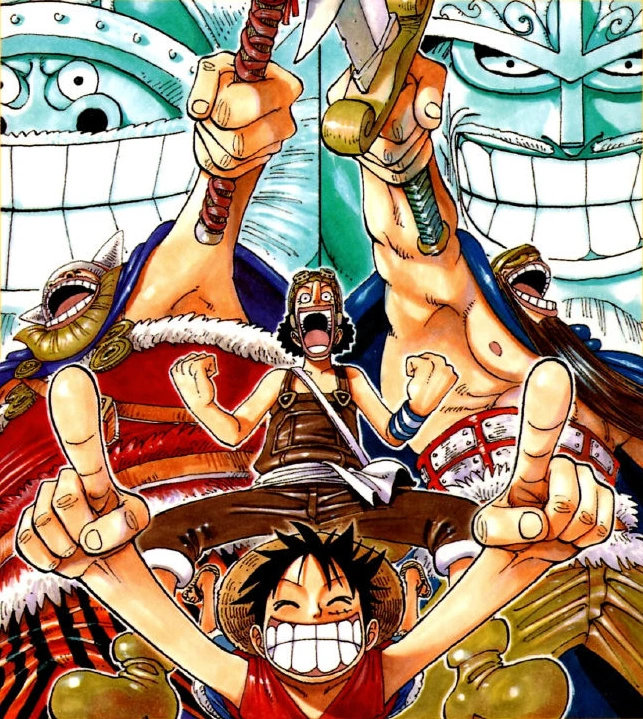

Now with Vivi in tow, the Straw Hat Pirates travel to the prehistoric island of Little Garden. There, they encounter two Giants, Dorry and Brogy, who have been dueling one another on the island for the past century. After befriending the giants, the crew are ambushed by new and familiar officers of Baroque Works.
A Grand Duel Between Giants and a Mad Artist
With a newly acquired Princess Vivi on board, the Straw Hats soon find themselves on the island of Little Garden, which is a misnomer as the island is anything but little. It is stuck in a prehistoric time and teeming with huge dinosaurs and massive plant life. While Usopp and Nami feel uncomfortable leaving the ship, Vivi and Luffy decide to go explore the island.
They soon meet Dorry, a giant warrior from Elbaf who befriends them. A little while later, Sanji and Zoro get into a fight about who could get the most meat first. They soon leave the ship in search of animals they can use to win the bet. Left alone on the ship, Nami and Usopp learn why the island is called Little Garden. It is called Little Garden because of those who inhabit it. They are terrified when Brogy, another giant, shows up and decapitates a tyrannosaurus rex. He decides to bring them home with him, much to their alarm, under the impression he wants to eat them.
Elsewhere, Baroque Works agents Mr. 5, Miss Valentine, Mr. 3, and his partner Miss Goldenweek come together and reveal the Beli100,000,000 bounty on each of the giant's heads, and it is suggested by Mr. 3 that they kill them, along with the Straw Hats. Back at Dorry's campsite, Dorry explains that he and Brogy are forever destined to continue their one hundred year long war, which was started over a reason Dorry had long forgotte (it is later revealed that it was a quarrel about their hunting competition which resulted in their exile from Elbaf), which inspires Usopp to fight for his dream of being a proud warrior of the sea. When Dorry and Brogy are just about to continue their bout, Dorry suffers internal injuries from an explosion after drinking some of the Straw Hats' beer, which was tampered with by Mr. 5 using his Devil Fruit abilities. Dorry tries to attack Luffy, thinking he was responsible, but Luffy quickly beats him using Gomu Gomu Rocket by targeting his stomach.[4] Realizing that the god of Elbaf was not on his side, Dorry still decides to go and pins Luffy under a giant rock when Luffy tries to stop Dorry from going to fight Brogy.
Meanwhile, Mr. 3 and Miss Goldenweek capture Zoro first, and then Nami after she is separated from Usopp while running from a dinosaur. After Usopp meets with Luffy and Vivi, Vivi suspects that Baroque Works is likely behind Nami's disappearance, since out of the two of them, Nami is on their hit list while Usopp is not, and they are also responsible for the exploding beer that injured Dorry. Eventually, Dorry loses to Brogy due to his injuries (as well as Mr. 3 using his wax in secret to make Dorry trip). Brogy notices a deficiency in Dorry's performance but is too late in identifying the perpetrators when Mr. 3 appears and imprisons him with wax. Mr. 5 and Miss Valentine then succeed in capturing Vivi despite failing to use Karoo to lure her away from Luffy, which they realize they did not need to do since Luffy was imprisoned by the rock, and quickly defeat him, Usopp and Karoo.
Mr. 3 then imprisons Zoro, Nami, and Vivi in his giant candle set which will slowly turn them along with Brogy into wax sculptures. Just as Zoro is about to cut off his legs to break free, Luffy, Usopp, and Karoo arrive to save their friends. However, when Luffy damages Mr. 3's giant candelabra after his feet are trapped in the wax, it only accelerates the process, giving Luffy, Usopp, and Karoo less time to save the others. Mr. 5 and Miss Valentine then engage Usopp and Karoo and all the two can do is run away since Usopp's Gunpowder Star is useless against Mr. 5, while Mr. 3 prevents Luffy's further attempts from destroying his candle set.
Luffy is then brought under Miss Goldenweek's hypnotic control. Despite all of Luffy's attempts to free himself from the hypnosis, Miss Goldenweek continues to use her Colors Trap ability to re-hypnotize Luffy. Eventually, Usopp, as he is dodging Mr. 5's Breath Blast Bomb, realizes the situation and uses his Flame Star to burn Luffy's shirt to free him completely, forcing Mr. 3 to form his mecha-like armor, the Candle Champion, to hold off Luffy. Once Usopp realizes that despite the density Mr. 3 makes his wax, it could still be melted away, and though their friends' bodies have been completely covered, they still have a small amount of time left.
Though the Mr. 5 team takes down Usopp before he can try to shoot the candle set with his Flame Star, Usopp gives Karoo a rope with instructions to run around with it along the candle set. As he is taking the strain from Miss Valentine's weight, Usopp tells Luffy to set the rope (which he soaked with oil) on fire, as it is the only way to melt the wax quickly enough to save their friends. Grabbing onto Mr. 3's hair, Luffy uses the fiery portion of it to light the rope tricking Mr. 3 into melting the wax. Once the candle set is destroyed, Nami and Vivi defeat Miss Valentine. Before Mr. 5 can shoot Vivi, Usopp tricks Mr. 5 into eating his Tabasco Star and is saved by Zoro before an angry Mr. 5 can kill him. Meanwhile, Luffy and Karoo pursue the Mr. 3 team, and though Mr. 3 tries to trick Luffy by creating clone statues of himself, Luffy, through sheer instinct, knocks him out, while Karoo defeats Miss Goldenweek.
After the Battle
Meanwhile, Sanji enjoys tea in Mr. 3's candle house and receives a call from Mr. 0, who mistakes him for Mr. 3. He is ordered to go to Arabasta (later revealed to be a ploy to make assassinating him easier for Mr. 2 after Mr. 0 thought he lied about succeeding in his mission to kill Vivi and the Straw Hats) by way of the Eternal Pose which is being sent by the Unluckies, Mr. 13 and Miss Friday, who attack Sanji and are defeated upon making the delivery. Dorry turns out to be okay as he was only knocked out as both his sword and Brogy's axe were dulled from being constantly used over the last century.
Meanwhile, the Marines have intercepted a garbled message in the call between Mr. 0 and Sanji. Smoker is able to make out four key words, "Princess Vivi," "Straw Hats," "Mr. 0," and "orders directly." They were able to capture Mr. 11, a Baroque Works frontier agent and trick him into confirming the existence of a criminal organization headed by Mr. 0. Smoker decides to follow the clues and head for the Kingdom of Arabasta.
Once Sanji returns, Dorry and Brogy bid farewell to the Straw Hats by slaying Island Eater, a giant goldfish who eats ships leaving the island, sacrificing what remained of their weapons in the process. With that, the Straw Hats head for Arabasta using the Eternal Pose they got from the Unluckies.